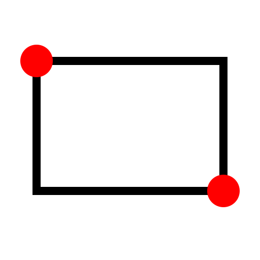

R 長方形
ツールバー/アイコン:

メニュー: D 描画 > Shape > R 長方形
ショートカット: R, E
コマンド: rectangle | linerectangle | rect | re
説明:
四角形を2点から対角線上に作成します。
手順:
- 長方形の最初の角を指定します。
- 第2の角にマウスを移動させて、長方形の第2の角を指定するにはクリックします。
あるいは、コマンドプロンプトの中で第2の角の座標を入力します。
例えば、幅50および高さ25で長方形を作成するためには、第2の角の相対座標に以下のように入力してください:
@50,25